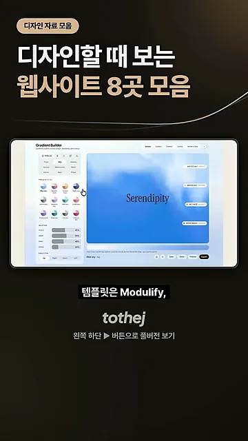
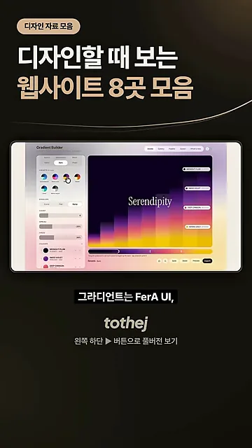
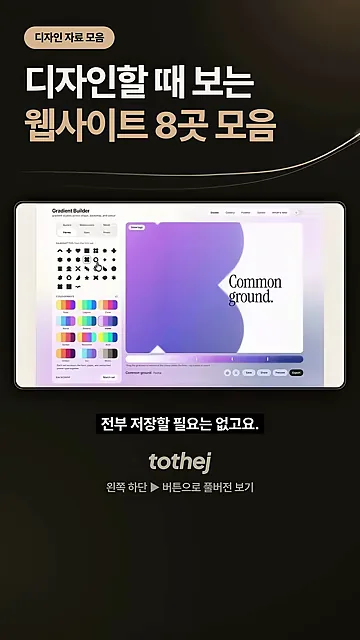

용도별로 고른 사이트 여덟 곳
24초짜리 쇼츠라 영상은 사이트 이름과 용도만 빠르게 불러 줘요. 화면 아래쪽에 박힌 자막에 이름이 영어로 정확히 찍혀 있어서, 이름은 그 자막을 기준으로 적었어요.
| 무엇을 찾을 때 | 영상이 꼽은 사이트 | 나오는 때 |
|---|---|---|
| 템플릿 | Modulify | 00:03 |
| 배경 | Backgrounds Supply | 00:04 |
| 포트폴리오 | Reelfolio | 00:06 |
| 영감 (화면 사례) | Inspora | 00:07 |
| 모바일 UI 움직임 | 60fps.design | 00:09 |
| 프롬프트 | One Prompt | 00:12 |
| 그라디언트 | FeralUI (화면 자막은 FerA UI) | 00:14 |
| 웹 애니메이션 | Theatre.js | 00:15 |
영상이 도는 동안 가운데 화면에는 사이트 여덟 곳이 번갈아 나오지 않아요. 처음부터 끝까지 'Gradient Builder'라는 도구 하나가 나와요. 왼쪽 패널에서 색 조합을 고르면 오른쪽 큰 미리보기의 그라디언트가 바뀌는 화면이에요. 아래 장면은 'Modulify' 자막이 뜰 때인데, 배경은 여전히 파란 구름 같은 그라디언트에 'Serendipity' 글자가 얹힌 미리보기예요.

'그라디언트는 FerA UI' 자막이 뜨는 순간에는 미리보기가 계단처럼 쌓인 보라·주황 그라디언트로 바뀌어 있어요. 왼쪽 위 견본 하나에 마우스가 올라가 있죠. 이 도구가 바로 FeralUI의 무료 그라디언트 생성기라서, 화면 자막의 'FerA UI'는 FeralUI를 잘못 적은 것으로 봤어요.

다 저장하지 말고 하나씩
여덟 곳을 소개한 뒤 영상은 바로 선을 그어요. 전부 저장할 필요는 없고, 템플릿·배경·움직임 세 갈래에서 하나씩만 골라 보라고 해요. 즐겨찾기만 잔뜩 쌓아 두면 정작 작업할 때 어디를 열지 고르느라 시간이 가기 쉬워요.
아래 그림은 여덟 곳을 영상이 말한 세 갈래 위에 놓아 본 거예요. 진하게 칠한 칸이 '하나씩 고르라'는 세 갈래이고, 흐린 칸은 필요할 때 꺼내 보면 되는 나머지예요. 움직임 갈래에는 영상이 말한 모바일 UI 움직임과 웹 애니메이션 두 곳을 함께 넣었어요.
이 말을 할 때 배경 도구는 모양 모드로 바뀌어 있어요. 왼쪽에 검은 도형 견본이 격자로 늘어서 있고, 미리보기에는 보라색 도형 옆에 'Common ground.'라는 문구가 놓여 있어요. 그라디언트를 배경뿐 아니라 도형 안에도 채울 수 있다는 걸 보여 주는 장면이에요.

마지막 당부는 무료 범위와 라이선스예요. 쓰기 전에 둘 다 꼭 확인하라고 해요. 이 자막이 뜰 때 미리보기에는 파란 별 모양 그라디언트와 'Fold the light.' 문구가 있고, 마우스가 아래쪽 내보내기 막대 근처로 내려가 있어요.